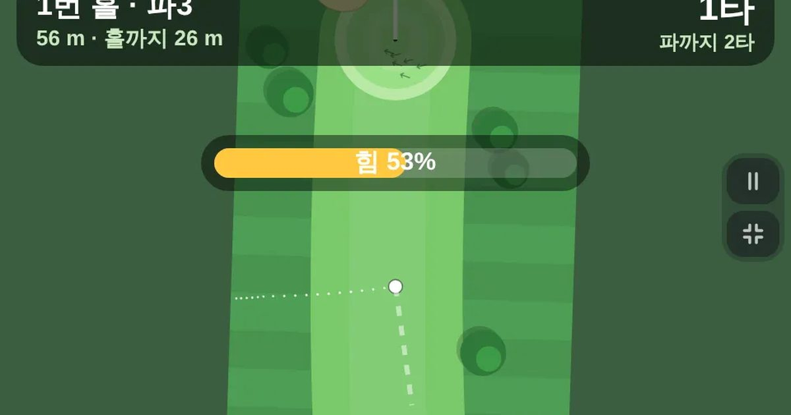

파크골프
Park Golf
골프 · 9홀 · 1~4명바로 시작설치 없음폰 · PC
▶ 지금 바로 하기로그인 없이 브라우저에서 바로 시작돼요
어떤 게임인가요?
동호인 수십만의 그 파크골프! 클럽 하나로 파3 · 파4 · 파5 아홉 홀(또는 열여덟 홀)을 돌아요. 공을 누른 채 뒤로 끌면 예상 경로가 점선으로 보이고, 놓으면 샷. 벙커 · 연못 · 나무 · 그린 경사까지 실제 코스처럼. 폰 하나로 네 명까지 돌아가며 칠 수 있어요.
목표 · 클럽 하나로 아홉 홀(또는 열여덟 홀)을 돌며 기준 타수(파)보다 적게 치기.
게임 방법
- 공을 누른 채 아래로 끌었다 놓으면 쳐요 · 길게 끌수록 세게 · 옆으로 끌면 방향
- 점선이 공이 갈 길이에요 · 끝 동그라미가 멈출 자리
- 그린에선 살살 · 경사 화살표 쪽으로 공이 흘러요
- 벙커에 빠지면 힘이 반밖에 안 실려요 · 연못 · 밖(OB)은 1타 더하고 제자리
- 설정에서 2~4명 · 18홀을 고를 수 있어요 · 키보드: ←→ 조준 · 스페이스 길게 눌렀다 놓기
등장하는 것들
- 페어웨이 · 잘 굴러요
- 그린 · 가장 잘 굴러요 · 경사 있음
- 러프 · 잘 안 굴러요
- 벙커 · 힘이 반만
- 연못 · 1타 벌타
공략 팁
- 공을 누른 채 뒤로 끌면 점선이 생겨요 — 끝 동그라미가 공이 멈출 자리
- 그린 경사 화살표 쪽으로 공이 흘러요 · 반대쪽을 조금 겨누세요
- 벙커는 힘이 반 · 연못 · OB는 1타 벌타 · 파+4타면 다음 홀로
- 둘 이상이면 홀에서 먼 사람이 먼저 쳐요(실제 규칙)
 코너킹 드리프트
코너킹 드리프트 폴짝 개구리
폴짝 개구리 링 파이터
링 파이터 승부차기
승부차기 구름 점프
구름 점프 솔리테어
솔리테어